HOLA 🌹
Soy María Rosa Gervasoni, de 27 años, abogada de profesión, con titulo intermedio de
Soy María Rosa Gervasoni, de 27 años, abogada de profesión, con titulo intermedio de
Mi especialización en Back-end abarca una variedad de tecnologías, incluyendo Java, Golang, Javascript, Contenedores, Kubernetes, Testing Manual y Automatizado, frameworks React, Gin y Spring, microservicios y APIs Rest. Mi enfoque proactivo y mi capacidad para consumir información rápidamente me han permitido destacar en mi formación, demostrando así mi compromiso con la excelencia en el desarrollo.
Por otro lado, mi experiencia legal aporta una perspectiva única a mi enfoque en programación, destacando especialmente en la lectura e investigación, donde mi velocidad para asimilar información ha sido un activo fundamental.
Durante mis estudios en Digital House, enfrenté desafíos de colaboración en trabajos grupales, en los cuales asumí responsabilidades adicionales para garantizar el éxito de los proyectos, resaltando así mi compromiso, responsabilidad y capacidad para sobresalir en situaciones desafiantes.
La transición de la abogacía al desarrollo web ha sido impulsada por mi auténtica pasión y satisfacción en el mundo de la programación. Durante mis prácticas legales, descubrí que mi verdadera felicidad radica en la resolución de problemas y la inmersión en el fascinante mundo de la tecnología.


 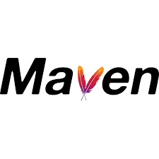
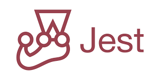
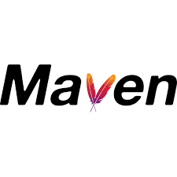
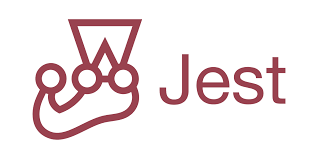


 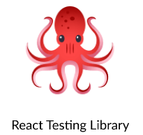
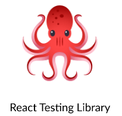


 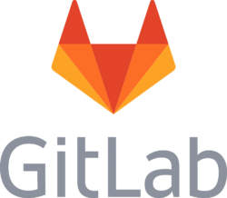
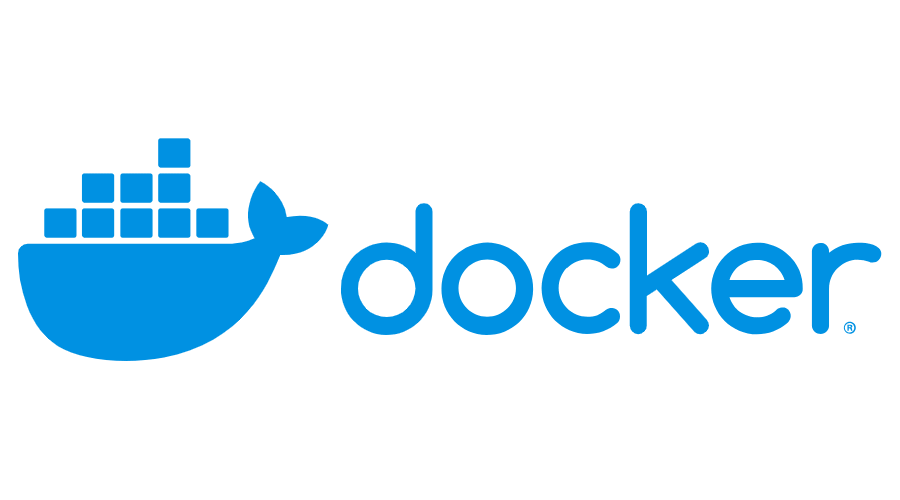
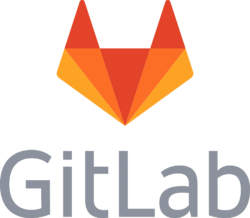
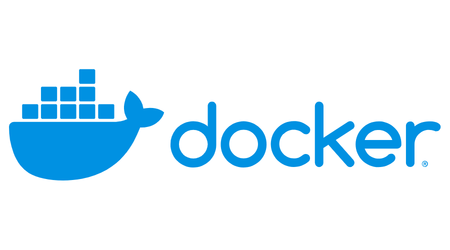


 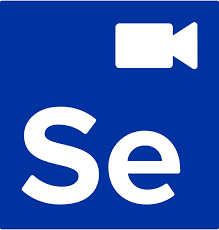
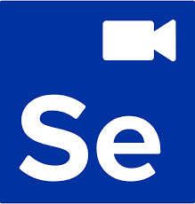

- Desarrollo Fullstack (Abril 2023)
- Especialización en Desarrollo Backend
- Abogacía, orientación en Derecho Privado